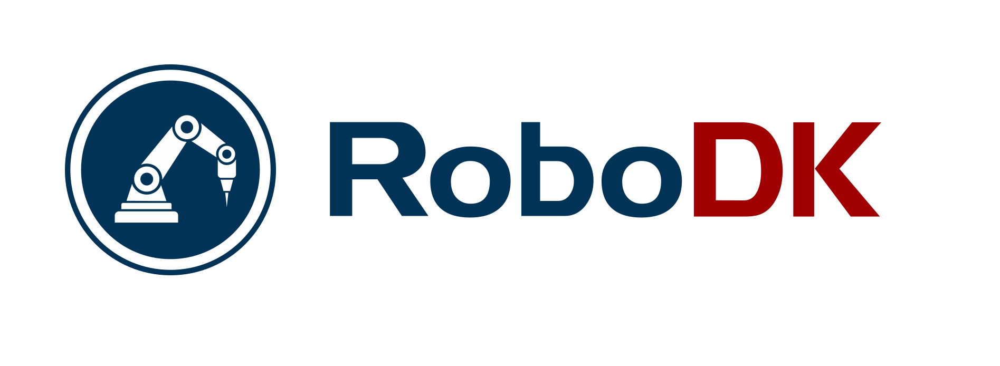

AVL is the student team of Cal Poly Pomona's Autonomous Systems Lab. We advance autonomous vehicle perception, path planning, and control, from hardware to algorithm.
Organizations supporting autonomous vehicle research at Cal Poly Pomona

Custom metal fabrication for AVL projects
Interested in supporting autonomous systems research at Cal Poly Pomona?
Become a PartnerSupport that makes AVL's work possible
The establishment of the Ganpat and Manju Center for International Collaboration and Innovation is a testament to the generosity and vision of engineering alumnus Dr. Ganpat Patel and his wife, Manju Patel. With their charitable contribution of $1 million to the Cal Poly Pomona Philanthropic Foundation, the Patels have significantly enhanced the capabilities and reputation of Cal Poly Pomona’s College of Engineering.
This center stands as a beacon of academic excellence, fostering a collaborative international exchange that emphasizes solution-based teaching, cutting-edge innovation, and impactful research. It is dedicated to promoting greater student success and nurturing the entrepreneurial spirit, providing our students and faculty with unparalleled opportunities to excel and lead in their fields.
We extend our deepest gratitude to Dr. Ganpat and Manju Patel for their unwavering support and commitment to advancing engineering education and inspiring future generations of engineers.
California State Polytechnic University, Pomona (Cal Poly Pomona or CPP) seeks to enhance student education and expand expertise in Industry 4.0 by establishing a modeling and simulation career-track program titled Industry 4.0: Career Advancement through Research and Education in Modeling and Simulation (iCARE-M&S) (MSP Absolute Priority Two). The interdisciplinary nature of iCARE-M&S encourages collaboration among faculty and students from diverse disciplines, enabling the exploration and resolution of complex problems that transcend traditional boundaries.
The goal of the proposed program is to increase the pool of STEM professionals and leaders with the knowledge, skills, and experience needed to integrate M&S concepts into Autonomous Systems for students’ current and future research, careers, and academic plans. The program will serve students from the CPP College of Engineering and from the Computer Science Department. It aims to expedite the education of the students beyond their degree program by providing them with comprehensive M&S training and experience with a specific focus on autonomous (electric) vehicles.
Through Objective One, faculty will bring isolated M&S courses under the umbrella of the iCARE-M&S facilities and website, by building the overall program structure, upgrading existing M&S courses, creating new ones, and by developing a series of freely accessible online courses that encompass a wide range of topics vital for I4.0 careers, including computer vision, autonomous navigation, and cyber security. A digital badging (micro certification) process is a key output. The primary Objective One outcome is the development and delivery of an M&S Career Track Program in which students can earn badges that represent the successful acquisition of key I4.0 competencies.
Our go-kart demonstrates real-time path planning and obstacle avoidance on Cal Poly Pomona roads.